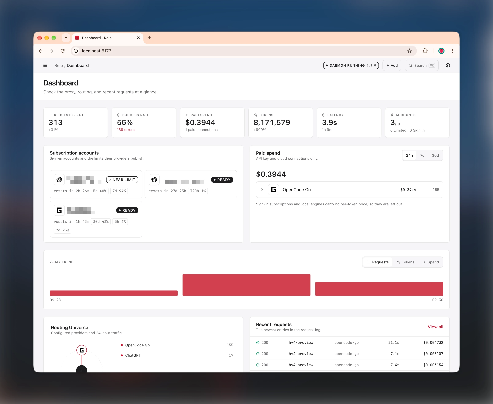

One loopback Proxy.
Codex, Claude Code, Cursor, and Grok keep their own config and still reach any upstream.

Relo is a local LLM gateway. It sits between your coding clients and upstream providers, routes requests, pools accounts, and records usage.
- 3Loopback ports
- 4Clients tested
- 3Console languages
Loopback ports
-
10101Console and management API
Opens at
http://127.0.0.1:10101. With[admin] login = true, sign in with the admin token. -
10201OpenAI-compatible
/v1/*Clients that speak the OpenAI API point here and authenticate with a client key.
-
10202Anthropic
/v1/*Clients that speak the Anthropic API point here and authenticate with a client key.
Client keys hit the data plane. The admin token hits the console. Provider credentials go upstream only.
Install
-
macOS
brew install --cask jonaskahn/tap/relo -
Windows
Relo-Setup-<version>-amd64.exefrom releases -
Linux
.debor.rpmon the same releases page -
Daemon only
curl -fsSL https://github.com/jonaskahn/relo/releases/latest/download/install.sh | shirm https://github.com/jonaskahn/relo/releases/latest/download/install.ps1 | iex
Start
relo daemon start runs the proxy. The console is at http://127.0.0.1:10101. Set desktop.hide = true when you want the daemon without a tray.